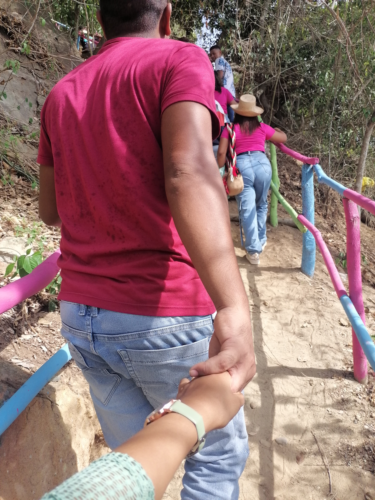
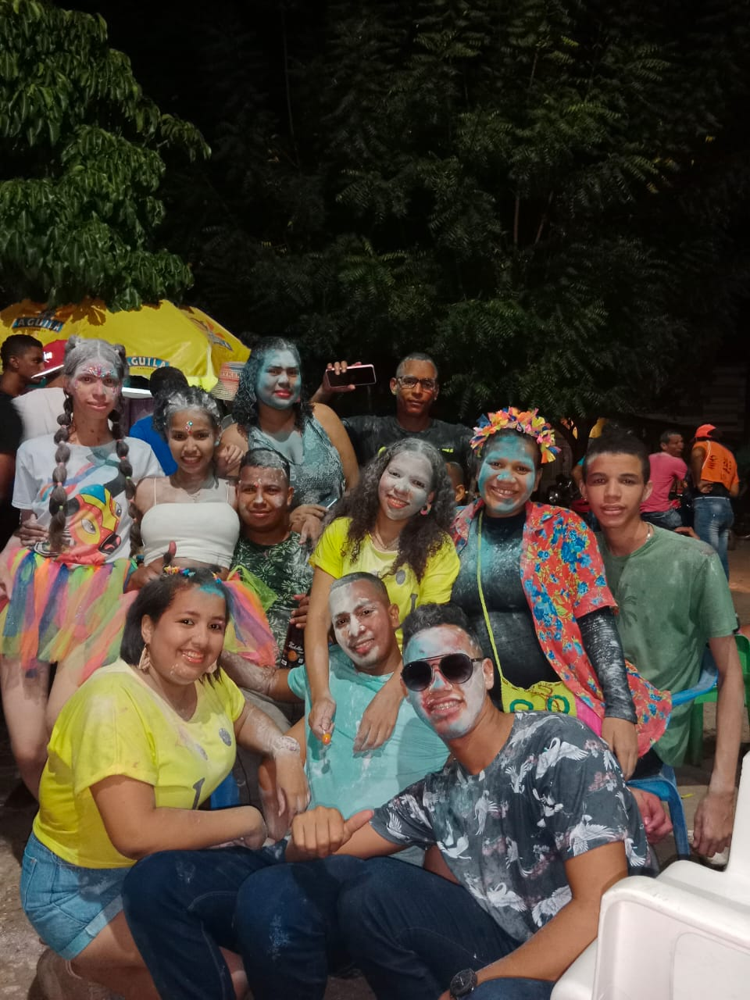
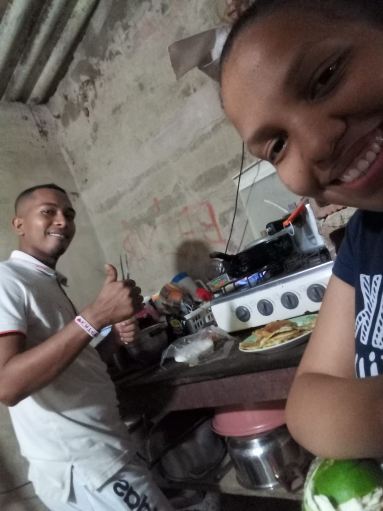

Feliz Cumpleaños, Mi Amor
Hoy celebro tu vida, nuestra historia y el futuro que soñamos. Preparé este lugar para recordarte —con música, videos, fotos y palabras— lo inmenso que es mi amor por ti.
📜 Carta para ti
Amor mío, hoy quiero detener el tiempo para hablarte con calma, con el corazón abierto y con la certeza de que cada palabra que escribo está cosida a la memoria de lo que somos. Desde el primer día supe que había algo irrepetible en ti: una luz traviesa en los ojos, una risa que se colaba entre los ruidos del mundo y los volvía música, una forma de mirar que parecía comprender sin preguntar. No sé si el destino existe como lo pintan en los libros, pero sí sé que hay encuentros que cambian el rumbo, que nos enseñan a nombrar lo que antes era solo presentimiento; tú fuiste ese encuentro, el que convirtió mis pasos en camino.
Recuerdo nuestras primeras conversaciones, el titubeo dulce de no saber si decirlo todo o guardar un poco para más tarde, como quien quiere que un atardecer se prolongue. Descubrí que contigo se puede hablar de lo serio sin perder la sonrisa, y de lo cotidiano sin que deje de tener brillo. A veces me pregunto en qué momento mi día empezó a contar el tiempo con tus mensajes, mis planes con tus horarios y mis ganas con tu presencia. Lo cierto es que desde entonces aprendí un idioma nuevo: la gramática de tus gestos, la semántica de tus silencios, la sintaxis cariñosa con la que ordenas el caos cuando todo parece demasiado.
Si me pidieran definir el amor, no hablaría de promesas perfectas, hablaría de ese cotidiano que hemos levantado con paciencia: hacer mercado tomados de la mano, reírnos de chistes malos que solo nosotros entendemos, cuidarnos cuando el ánimo baja, celebrar los pequeños logros, preparar café con la complicidad de quien conoce los gustos del otro. El amor que siento por ti no es un fuego que se apaga con el viento, es un hogar al que siempre se vuelve; no es un estruendo momentáneo, es una melodía que se repite y cada vez suena más honda. Y en ese hogar compartimos también lo lúdico: los guiños de Lilo & Stitch que nos recuerdan que la familia se elige y se cuida, que la lealtad tiene ojos azules y una sonrisa imperdonablemente tierna.
Me conmueve la fuerza con la que enfrentas los días difíciles, esa terquedad hermosa con la que decides cuidar de los demás aunque a veces falten fuerzas para cuidarte a ti. Eres fucsia en un mundo gris, eres chispa en el invierno, eres abrazo en la tormenta. A tu lado la palabra futuro ya no asusta, se vuelve promesa; el pasado deja de ser peso, se convierte en raíz; y el presente, incluso con su torpeza y su prisa, encuentra en ti un latido que lo ordena. Hay instantes que guardo como tesoros: la primera vez que bailamos sin música, la tarde en que el cielo parecía un dulce de algodón, ela vez que hablando de noche en la muralla bautizamos una estrella y siempre que la veamos recoderiamos ese dia con amor , las noches en que el sueño no llegaba pero la conversación nos abrigaba.
Quiero agradecerte por lo que eres y por lo que haces que yo sea. Contigo descubrí versiones mías que desconocía: la paciencia para escuchar mejor, la alegría simple de madrugar para prepararte una sorpresa, la disciplina para construir metas comunes, el coraje para decir “lo siento” cuando me equivoco y el orgullo sereno de decir “lo logramos” cuando juntos vencemos un reto. No eres una idea del amor: eres su cuerpo, su risa, su modo cotidiano de darse. He aprendido que amar también es aprender: a pedir perdón a tiempo, a no dar por hecho la presencia del otro, a recordar que la ternura es un trabajo diario que se riega como se riega una planta, con cuidado, con atención y con entusiasmo.
Si cierro los ojos y pienso en el mañana, te veo en escenas que me parecen inevitables: despertándonos con un beso, escogiendo películas aunque siempre terminemos volviendo a nuestras favoritas, ordenando fotos que, como esta galería, nos verán crecer. Te veo aplaudiendo mis locuras tecnológicas, riéndote cuando algo no compila pero insistiendo conmigo hasta que por fin funciona. Te veo con tu color fucsia destellando en detalles por toda la casa, en flores, en tazas, en cuadernos; te veo bailando en la cocina con Stitch haciendo de DJ imaginario, y a Lilo recordándonos que el sentido de hogar ohana es lo que construimos cada día.
Hoy, en tu cumpleaños, quiero desearte salud para tus sueños, calma para tus batallas y asombro para tus descubrimientos. Quiero prometerte que seguiré apostando por nosotros incluso cuando el camino exija más de lo que esperábamos; que seré compañero en las horas de luz y en las de sombra; que cuidaré lo pequeño y respetaré lo grande; que sabré callar cuando haga falta y hablar cuando sea necesario; que estaré atento a tus señales y celebraré con orgullo tus conquistas. Mi compromiso no cabe en un par de frases: es una constelación de gestos, una arquitectura de tiempo compartido, un cuaderno de planes con margen para la improvisación.
Hay palabras que aún no inventan para decir exactamente lo que siento, pero mientras llegan, te dejo estas: gracias por elegir quedarte, por creer en lo que somos, por enseñarme cada día que el amor no es un accidente sino una decisión alegre. Gracias por iluminar mis días con tu color fucsia, por enseñarme a mirar con ternura incluso cuando el mundo no invita a hacerlo, por recordarme con tu risa que la vida merece ser bailada. Gracias por tus manos, que hablan incluso cuando el ruido intenta distraernos; por tus ojos, que me devuelven una versión mía que vale la pena cuidar; por tus silencios, que lejos de asustar, me invitan a acercarme.
Si alguna vez la duda se asoma, miremos atrás: no para quedarnos en lo que ya pasó, sino para recordar que hemos sido capaces, que hemos crecido, que aprendimos a pedir ayuda, a darnos espacio y a volver con ganas. Miraremos también hacia adelante, no para vivir en un futuro hipotético, sino para mantener encendida la chispa de los proyectos: viajes por descubrir, recetas por inventar, canciones por cantar en el carro, fotografías por imprimir, puestas de sol por coleccionar. Y miraremos este presente con gratitud: porque hoy estás cumpliendo años, porque hoy celebramos tu vida, porque hoy mi mayor deseo es que te sientas amada, acompañada y orgullosa de ti.
Quisiera terminar recordándote algo que a veces olvidamos: mereces todo lo bueno que te pasa, y también mereces descanso cuando te cansas. Mereces abrazos largos, rutas sencillas, mañanas sin prisa. Mereces proyectos que te enciendan los ojos y personas que sepan estar a la altura de tu luz. Yo quiero ser, cada día, una de esas personas: la que escucha, la que aprende, la que te sostiene cuando hace falta y la que celebra siempre. Quiero seguir inventando contigo tradiciones nuevas, como esta página que hoy te regalo, que fue hecha con paciencia, con cariño y con la ilusión de sorprenderte. Ojalá al recorrerla sientas que en cada detalle está mi corazón, ese que late con forma de candado porque guarda lo más valioso: tú.
Feliz cumpleaños, amor mío. Que este año te encuentre radiante y te regale el tipo de magia que se queda. Te amo con el amor que no exagera porque no lo necesita: con el amor que se demuestra, que se cultiva, que regresa. Gracias por existir y por elegirme; gracias por darme un lugar en tu historia. Prometo seguir construyendo contigo un hogar donde siempre haya sitio para la risa, para la música y para la esperanza. Y cuando la vida se ponga seria, prometo ponernos la flor en el pelo como Lilo, sacar a bailar a Stitch y recordar que no estamos solos: ʻohana significa familia, y familia significa que nadie se queda atrás ni se olvida. Contigo, nunca.
📸 Galería de momentos



🎬 Nuestros videos
🌺 Lilo & Stitch
Porque son tus favoritos, aquí les guardoun espacio especial. Este rincón recuerda que ʻohana significa familia: nadie se queda atrás ni se olvida.
💖 Color favorito: Fucsia
🩷💫
🧸🏝️